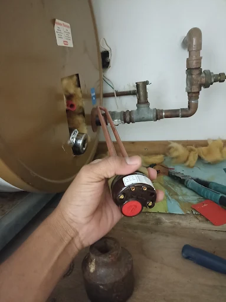
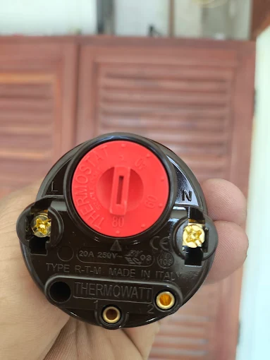

Quando procurar assistência para o boiler?
Se a água não estiver aquecendo como esperado, se o equipamento apresentar falhas ou se houver suspeita de problema na resistência, é importante solicitar uma avaliação técnica.
O atendimento começa pela identificação do modelo do aquecedor e dos sintomas apresentados. A necessidade de troca de resistência ou de outros componentes deve ser confirmada após a avaliação.

Troca de resistência de aquecedor boiler

A resistência é um dos componentes responsáveis pelo aquecimento da água. Quando apresenta defeito, pode comprometer o funcionamento do sistema.
O serviço pode envolver inspeção do equipamento, verificação da resistência instalada e substituição quando indicada. O orçamento depende do modelo, das condições do boiler e das peças necessárias.
Como funciona o atendimento
Não tente abrir o equipamento ou realizar reparos elétricos por conta própria. Desligue a alimentação elétrica se houver sinais de risco e solicite avaliação profissional.
Precisa de atendimento para aquecedor boiler em Guarujá?
Envie uma mensagem com o modelo do equipamento e uma breve descrição do problema para consultar o atendimento.
Falar com o profissional